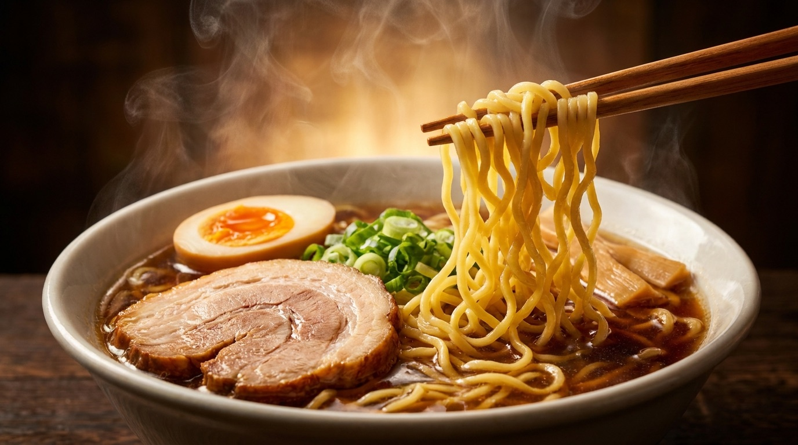
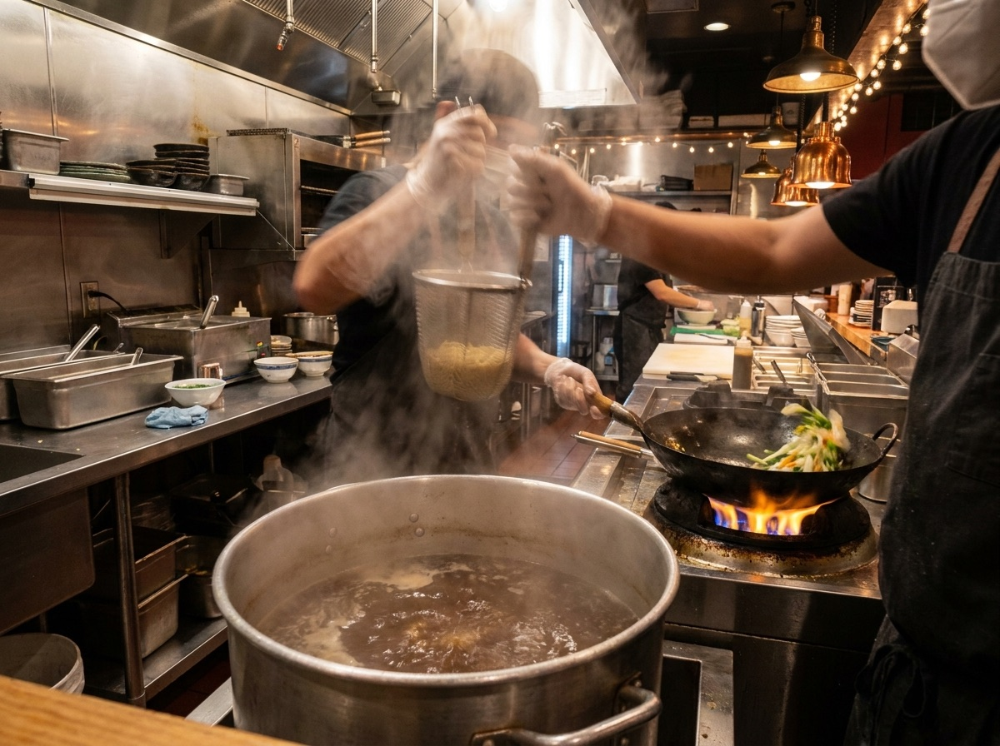

豚骨×魚介のWスープに、老舗醤油蔵のかえし。旭川ラーメン「麺屋 一徹」。

寸胴の前から離れない。それが一徹の流儀です。十時間かけて炊き上げた豚骨スープに、道北産煮干しの魚介スープを合わせるWスープ。
麺は旭川伝統の低加水中細ちぢれ麺。スープを持ち上げる、最後の一滴まで飲み干せる一杯です。
醤油らーめん ¥900味玉トッピング +¥120
※ お品書き・価格はサンプルです。
友だち追加で「味玉無料クーポン」をプレゼント。限定メニューの先行案内や、スープ切れ情報もLINEでお知らせします。